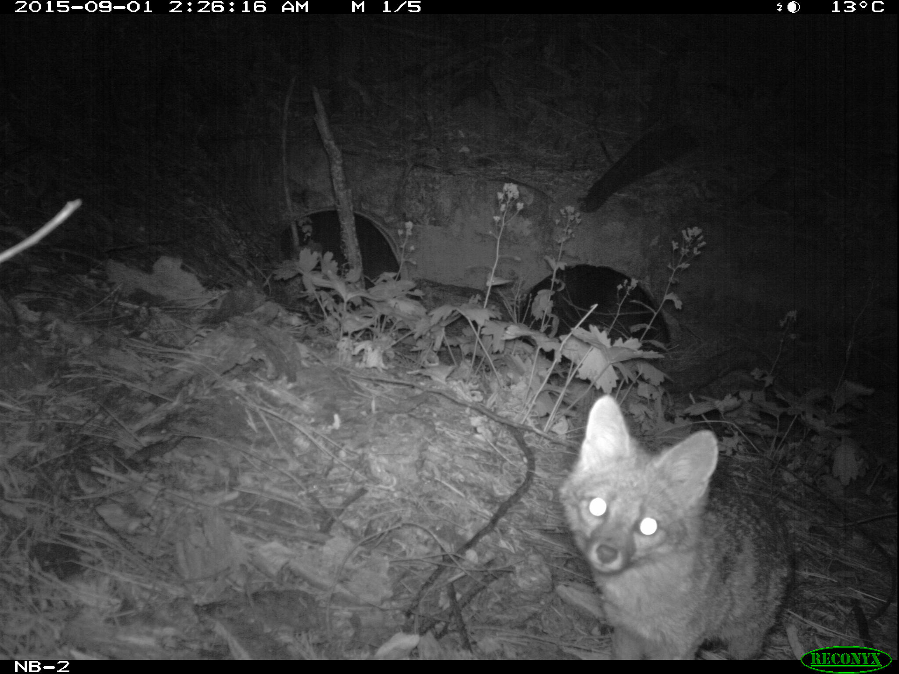

<!DOCTYPE html>
<html>
  <head>
    <title>NPMap Layers Control Example</title>
    <meta charset="utf-8" />
    <meta content="width=device-width, initial-scale=1.0" name="viewport">
    <link href="http://www.nps.gov/lib/bootstrap/3.3.2/css/nps-bootstrap.min.css" rel="stylesheet">
    <style>
      html, body {
        margin: 0;
        padding: 0;
      }
      html,
      body,
      #map {
        height: 100%;
        width: 100%;
      }
    </style>
  </head>
  <body>
  	<div id="map" style="height:100%;width:100%;"></div>
    <script>
      var App = {
        lowerMontane: null,
        upperMontane: null,
        subalpine: null,
        map: null,
        check: function (el) {
          var layer = App[el.id];

          if (el.checked) {
            App.map.addLayer(layer);
          } else {
            App.map.removeLayer(layer);
          }

          return false;
        }
      };


      var NPMap = {
        center: {
          lat: 37.87810535842238,
          lng: -119.54910278320312
        },
        div: 'map',
        baseLayers: [
                'mapbox-outdoors',
                'nps-parkTilesImagery'
              ],
        hooks: {
          init: function (callback) {

            App.map = NPMap.config.L;
            App.lowerMontane = new L.LayerGroup().addTo(App.map);
            App.upperMontane = new L.LayerGroup().addTo(App.map);
            App.subalpine = new L.LayerGroup().addTo(App.map);

            L.marker([37.509315, -119.605668]).bindPopup('<h1>Lower Montane Forest</h1><p>3000ft to 7000ft</p><a href="http://www.nps.gov/yose/learn/nature/mammals.htm" target="_blank">learn more</a>').addTo(App.lowerMontane),
            L.marker([37.692144, -119.641251]).bindPopup('<h1>Upper Montane Forest</h1><p>7000ft to 9000ft</p><a href="http://www.nps.gov/yose/learn/nature/mammals.htm" target="_blank">learn more</a>').addTo(App.upperMontane),


            callback();
          }
        },
        legendControl: {
          html: '' +
            '<form>' +
              '<div class="checkbox" style="margin-top:0;">' +
                '<label>' +
                  '<input id="lowerMontane" onclick="App.check(this);" style="margin-top:5px;" type="checkbox" checked>' +
                  'Lower Montane Forest' +
                '</label>' +
              '</div>' +
              '<div class="checkbox" style="margin-top:0;">' +
                '<label>' +
                  '<input id="upperMontane" onclick="App.check(this);" style="margin-top:5px;" type="checkbox" checked>' +
                  'Upper Montane Forest' +
                '</label>' +
              '</div>' +
              '<div class="checkbox" style="margin-top:0;">' +
                '<label>' +
                  '<input id="subalpine" onclick="App.check(this);" style="margin-top:5px;" type="checkbox" checked>' +
                  'Subalpine Forest' +
                '</label>' +
              '</div>' +
            '</form>' +
          '',
          position: 'bottomleft'
        },
        zoom: 10
      };
      var script = document.createElement('script');

      script.src = 'http://www.nps.gov/lib/npmap.js/3.0.7/npmap-bootstrap.min.js';
      document.body.appendChild(script);
    </script>
  </body>
</html>
